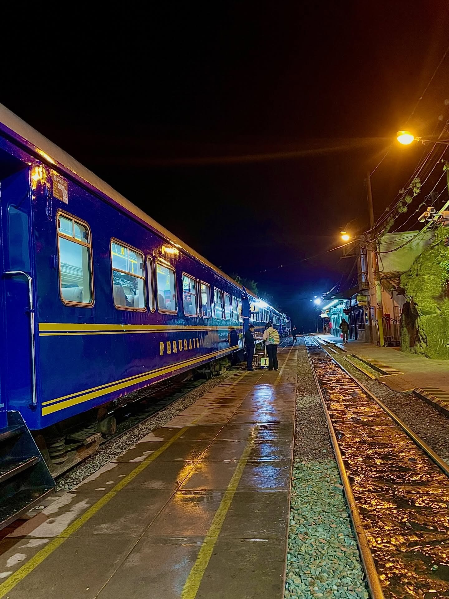

Some people travel to escape their lives and others travel because they have discovered their lives fit into less space than they were told. Juan Antonio Núñez belongs, I suspect, to a third category: he travels because staying still for too long keeps him from investigating.
He now lives in a 2013 Volkswagen Transporter that once drove around Chile and is now, all at once, home, vehicle, workshop, office and recurring mechanical problem. The van has nearly a quarter of a million kilometers, a refrigerator that has decided to turn voltage into a topic of conversation, an electrical installation that still leaves room for several improvements and a second gear with certain opinions of its own about when it should engage. For many people, all of this would be a collection of inconveniences. For Juan, it is study material.

He can go from wondering why a battery drops to six volts when the compressor starts, to researching how political power worked in nineteenth-century Peru. Then he wants to know the exact bulb used by a Transporter T5.1, which Guatemalan bank charges less to withdraw quetzales with a Mexican card, or what Paul of Tarsus really said about obeying authorities. If an answer begins with “probably,” his next question is usually why we are assuming.
He is a computer systems engineer and also studied International Relations, a combination less strange than it seems once you talk with him long enough. Both disciplines share an obsession: systems. Who has power, which rules distribute it, where the dependency is, what happens when one part fails. The same can apply to a State as to a company, to a political campaign as to a 12-volt circuit.
At some point in his professional life, he programmed. He also managed companies, coordinated projects and ended up doing many of the things that appear when an organization discovers it needs someone capable of understanding a problem before deciding whose job it is to solve it. That kind of trajectory produces uncomfortable resumes. It does not fit cleanly under a single label. Programmer is true. Project manager too. Administrator, editor, digital operator, content producer: also true.
Perhaps that is why he seems to have little patience for the professional liturgy that forces a person to choose a single identity and perform it for forty years.
His current project is much more concrete: finding a way to live while working from anywhere.
It is not an especially novel fantasy. The internet is full of people selling the word “nomad” accompanied by a computer in front of a beach. Juan’s version has fewer palm trees and considerably more Excel. There are clients, billable hours, websites, podcast editing, reels, captions, automations, invoices and calculations about how many monthly clients are needed to turn an intention into an income.
There is also a van.

It is part of that mobile life project, and now Juan and Kat move through Central America at a speed determined as much by the roads as by the mechanics. They have passed through Mexico and Guatemala; lately the landscape is Lake Atitlán, with San Marcos as one of those temporary bases that stop feeling like vacation as soon as one has to worry about water, electricity, internet, clean clothes and where to park.
That difference matters.
The tourist asks what there is to see in Panajachel. Juan also asks where the BAC ATM is, how much it charges, where people who live there buy clothes and how far from Calle Santander prices begin to drop.
There is something almost anthropological in that way of traveling. Cities stop being collections of monuments and appear as everyday systems: where people shop, how much it costs to eat, how money moves, who accepts cards, where a car gets repaired, which neighborhoods are better to avoid. It is not exactly about living like a local, a phrase travelers have worn down until it became advertising, but about discovering how a place works when you actually need to use it.
That is where Taco Viajero comes from, his travel project, although even that name tells only part of the story. Juan takes photographs, writes very long Google Maps reviews and has the peculiar habit of recording details that almost no guide considers important: whether they accept cards, whether they charge a commission, how long the service takes, what the bathrooms are like, how much noise there is.
This may seem excessive until the day you need precisely one of those details.

He also records. A lot.
He has the idea of producing two versions of the places he travels through. One with almost no intervention: a still camera facing the lake, hours of birds, wind, water and life passing in front of the lens. The other requires narration, context and editing. For a while they may seem like opposite projects. In reality, they reveal the two ways he looks at almost everything: first observe; then explain.
Politics occupies the other end of that same impulse.
He can talk for hours about history, public administration, international relations or the small contradictions that survive beneath grand national narratives. He does not seem very interested in arriving quickly at the correct opinion. He is interested in taking the mechanism apart. Who decided. What incentives they had. Which document proves it. In what year it happened. Which part we are repeating because someone else repeated it before.
That also explains a certain impatience with imprecise answers.
“I don’t know” seems to him a perfectly respectable answer.
What bothers him is receiving a conjecture disguised as certainty.
At a time when much of our public conversation consists exactly of that, the distinction is not minor.
There are contradictions, of course. Juan wants geographic freedom, but he builds systems. He wants to travel without too many plans, but he can research for hours which modem uses certain LTE bands before buying it. He seeks to reduce his possessions and simultaneously turns a van into a small technological laboratory. He is interested in spontaneity and records his working hours down to the minute.
They do not seem like contradictions he needs to resolve.
Perhaps they are the method.

Freedom, for some people, consists of having no structure. For others, it consists of building enough structure so that the rest can be improvised.
Juan clearly belongs to the second group.
That is why his story still does not offer the immaculate arc profiles often demand. He did not leave an office to become rich while traveling. He did not find a secret formula for passive income. He has not yet turned his YouTube channels into a media company. He is doing something less spectacular and probably more difficult: trying to turn an unusual accumulation of skills into a sustainable way of life.
He programs when needed. Edits. Manages. Researches. Writes. Records. Repairs what he can. Learns what he does not know.
And keeps moving.
Someday, perhaps, someone will manage to summarize all of that with a professional title elegant enough. For now, another description seems more accurate to me.
Juan Antonio Núñez is the kind of person who arrives somewhere new, looks around and sooner or later asks the same question:
How does this work?